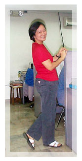

|
Viewpoint
Cata's
Diet Plan
by
Joie B. Alvarez
In
between meals, you will see her munching fruits, no bread.
At lunch, she usually eats lean meat and vegetables, such
as chicken without the skin and fresh spring rolls without
the wrapper. During breaks, her choices are lettuce dipped
in zero-fat Thousand Island dressing, hotdog (much better
if steamed, not fried), or an egg (I told her to spare the
yolk-high in fats). She does not eat dinner (if it's a treat,
she might reconsider).
Mama's
diet regimen is low carbohydrates & fats and mainly
fruits and protein. To simply put it, carbohydrate is the
main fuel of our body that keeps us moving (like a fuel
to a car). Amino acids (protein) are the building blocks
of any cells. It provides cells with the building material
they need to grow and maintain their structure. Fats are
used to synthesize fat-soluble vitamins (Vitamins A, D,
E, K) and the larger chunks are stored as a back-up source
of energy (contains calories twice more than carbohydrates
and protein).
So
how does the regimen works? It was said earlier that fats
are stored as a back-up source of energy, but as long as
we have enough carbohydrates to fuel our daily energy needs,
fats are not called for work and it idly lies just beneath
our skin. Lowering our carbohydrate intake forces our body
to convert our stored fats into energy. And while the fats
are melting away, it is important not to replenish what
was lost. It is also important to take note that our body
has the ability to convert excessive carbohydrates into
fats. That is why it is very important to cut down on these
two nutrients. We can safely say that cutback on protein
can be very minimal since its general effect is more on
the lean mass of our body, the muscles.
More
or less, this can be considered a generic principle in lowering
down our body's fat content. However, the percentage of
reduction as well as the rate of losing weight may vary
from one person to another depending on one's metabolic
rate. It is also important to lose weight gradually and
preferably, with the guidance of an expert especially if
you are an extreme case and presently have health problems.
|